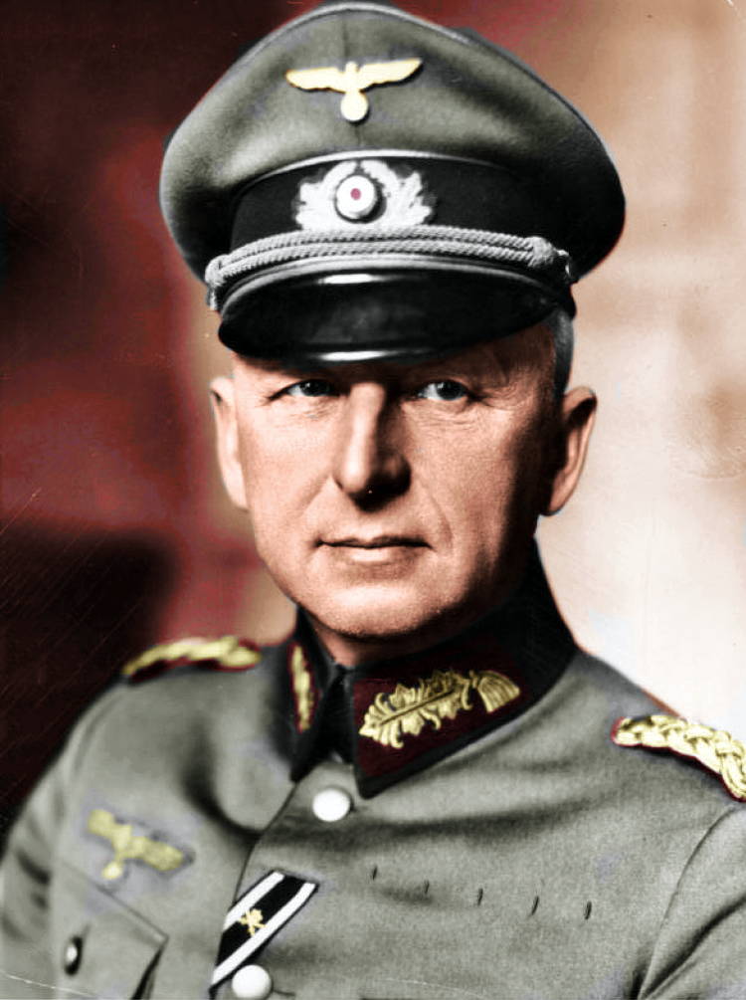

| Niemiecki feldmarszałek, zbrodniarz wojenny. We wrześniu 1939
roku w trakcie agresji Niemiec na Polskę Manstein był szefem sztabu Grupy Armii „Południe”.
W październiku 1939 roku po przemianowaniu na Grupę Armii „A” została ona przerzucona na front
zachodni. Na przełomie 1939 i 1940 von Manstein opracował plan pokonania Francji. Polegał on
na zmasowanym użyciu czołgów i uderzeniu przez Ardeny w kierunku Sedanu. W ten sposób wojska
zmechanizowane i pancerne mogły ominąć Linię Maginota i uderzyć w najsłabsze miejsce francuskiej
obrony. Naczelne Dowództwo Wojsk Lądowych w odpowiedzi odwołało Mansteina ze stanowiska szefa
sztabu Grupy Armii „A” i przekazało mu już mianowanemu z dniem 1 czerwca 1940 roku na stopień
generała piechoty dowodzenie nowo utworzonym XXXVIII Korpusem Armijnym. Nie brał udziału w pierwszej
fazie kampanii na zachodzie zakończonej ewakuacją wojsk sprzymierzonych w Dunkierce. W dalszej części
operacji Manstein na czele swojego korpusu przyczynił się do zyskania decydującego zwycięstwa na
Zachodzie, przebijając się w czternaście dni z linii Sommy do Loary. Za ten wyczyn został odznaczony
Krzyżem Rycerskim Krzyża Żelaznego. W rozpoczętej 22 czerwca 1941 roku wojnie z ZSRR, Manstein dowodził
LVI Korpusem Pancernym. Pierwszego dnia wojny jego oddziały musiały pokonać 80 km i zdobyć wielki wiadukt
drogowy nad doliną Dubissy pod Ejragołą. Zadanie zostało wykonane i po pokonaniu dalszych 240 km jego jednostki
26 czerwca zdobyły nieuszkodzone mosty w Dyneburgu i samo miasto. Później, po przełamaniu radzieckich pozycji
nad jeziorem Ilmen nacierał w kierunku Leningradu. 12 września 1941 został mianowany dowódcą 11. Armii,
której zadaniem było zdobycie Krymu. 4 lipca 1942 roku padł Sewastopol, a Manstein został nominowany na
feldmarszałka. Będąc dowódcą Grupy Armii „Don”, wziął udział w nieudanej próbie przyjścia z pomocą okrążonym
wojskom pod Stalingradem. Dowodząc Grupą Armii „Południe”, Manstein ponownie pokazał swój talent dowódczy,
wygrywając w marcu 1943 roku trzecią bitwę o Charków. Wziął udział w operacji „Cytadela”, bitwie na Łuku
Kurskim. Od tej chwili aż do jego dymisji dowodzona przez niego Grupa Armii „Południe” brała udział w ciężkich
walkach odwrotowych. 30 marca 1944 został zwolniony przez Hitlera z dowodzenia Grupy Armii „Południe”
(przemianowana na Grupę Armii „Północna Ukraina”). Do końca wojny nie otrzymał już żadnego przydziału służbowego
i przebywał w swoim majątku.
|

Erich Von Manstein, 1939
|